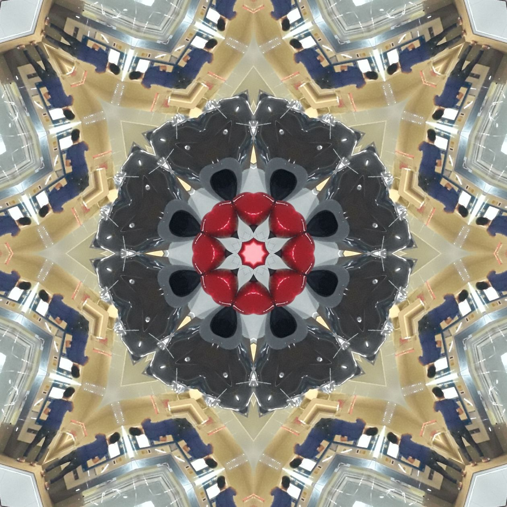

The Cartographer's Scope
For a collector of charts and atlases, Bath. Twelve weeks on the bench.
The brief
Ruth Pemberton collects sea charts — portolans, Admiralty surveys, a wall of framed coastlines. She asked for “a scope with the discipline of a compass rose: nothing frilly, nothing that wobbles.” She had owned a gift-shop scope years before and remembered chiefly that its pattern never quite met at the top. She wanted the join gone, and she wanted to be told, in numbers, why it would stay gone.
The decisions
The geometry chose itself once the compass rose was named. A traditional rose is drawn on twelve winds, and a two-mirror system at 30° gives 360 ÷ 30 = 12 sectors — a whole number, and even, so the field carries 12 points with no doubling at the join (the relation is printed on the Home page, Plate 2). The mirrors were aligned to that angle and checked against a divided circle before the barrel was closed; the join she remembered from the gift-shop scope is what an unclosed angle looks like, and 30° cannot produce it.
The cell was the second decision. She reads charts the way other people read novels — slowly, and again — so the bench filled an oil cell: lampworked glass and brass filings in silicone oil, drifting for a full minute after a turn instead of settling in a second. The barrel is brass, and the bearing ring is engraved with the twelve wind marks, cut by hand, so the outside of the instrument states the geometry of the inside.
The outcome
Delivered after twelve weeks, collected from the bench in person. Her words about the piece are on the Home page, in Plate 7, attached to this file where they belong. The scope is No. 218 in the bench book; its first mirror clean falls due at year one and is included in the price, as it is for every commission.
| System | Two-mirror |
|---|---|
| Mirror angle | 30° |
| Sectors / points | 12 / 12 points |
| Mirrors | First-surface, front-coated glass |
| Cell | Oil cell — lampworked glass, brass filings, dichroic offcuts (coated glass, named as such) |
| Barrel | Brass, 265 mm; bearing ring engraved with twelve wind marks |
| Price / time | £3,160 by the printed list — commission £2,600 + oil cell £220 + engraving £340 · 12 weeks |
